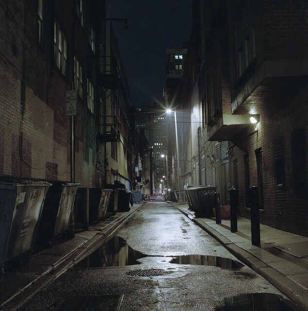

Um dia, você descobre que sua cidade está sendo assolada por eventos inexplicáveis: desaparecimentos, marcas estranhas e lendas antigas voltam à tona. Após uma tragédia pessoal, você decide investigar e descobre que há algo além do mundo que conhecemos. Você encontra um diário pertencente a um antigo caçador de monstros com a seguinte frase:"O sobrenatural está mais perto do que você imagina. Proteja-se, cace ou seja caçado."
Você descobre um caso estranho em uma casa abandonada. Durante a investigação, encontra evidências de atividade sobrenatural, como marcas de garras e uma figura fantasmagórica.
Você se une a um grupo de caçadores iniciantes e, juntos, investigam um desaparecimento em um parque. Lá, encontram sinais de uma criatura sobrenatural que ataca à noite.
Após a primeira caçada, você descobre que está lidando com algo mais perigoso do que imaginava: um demônio antigo, capaz de controlar outras criaturas.
Ao tentar enfrenta-lo viu como era tenemoroso e fugiu para bem longe dali e nunca mais voltaram lá
Após a primeira caçada, você descobre que está lidando com algo mais perigoso do que imaginava: um demônio antigo, capaz de controlar outras criaturas.
Ao tentar enfrenta-lo viu como era tenemoroso e fugiram para bem longe dali e nunca mais voltaram lá..
Você percebe que não pode enfrentar isso sozinho(a). Surge uma figura misteriosa: um caçador experiente John Winchester que oferece ajuda.
O confronto com o demônio chega ao auge. Ele revela que esteve manipulando eventos desde o início, tentando levá-lo(a) ao limite.
Você fallha e por fim aceita a ajuda aprendendo varias coisas.A luta contra o demônio exige um sacrifício: ou alguém próximo a você será ferido, ou você precisará renunciar a algo importante para completar a missão.
E você venceu o Dêmocio mas jornada está apenas começando. Seja como caçador(a) experiente ou alguém marcado pelo sobrenatural, você nunca mais será a mesma pessoa.
buscou uma solução onde ninguém precise sofrer, mesmo que isso complique a batalha.
E você venceu o Dêmocio mas jornada está apenas começando. Seja como caçador(a) experiente ou alguém marcado pelo sobrenatural, você nunca mais será a mesma pessoa.